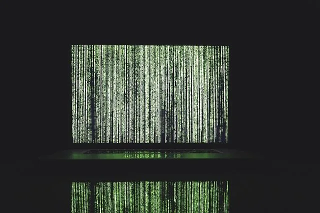
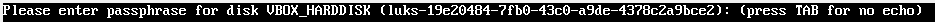

We believe security software like Kicksecure needs to remain Open Source and independent. Would you help sustain and grow the project? Learn more about our 14 year success story and maybe DONATE!
Encrypted
ImagesDocumentationCold
Boot Attack
DefensePrevious page:
Encrypted ImagesIndex page:
DocumentationNext page: Cold Boot Attack
Defense
Full Disk Encryption (FDE)
Full disk encryption (FDE) is a way to protect the contents of an entire hard drive from unauthorized access. It works by encrypting all the data stored on the disk, including the operating system and applications. This means that if someone gains physical access to the computer or removes the hard drive, they won't be able to read the data without the correct password or encryption key. FDE can help protect sensitive information such as financial data, personal information, and trade secrets.
About this
Full Disk
Encryption Page |
|
|---|---|
Support Status |
stable |
Difficulty |
easy |
Support |
|

Introduction
Essentials
Full Disk Encryption (FDE) can protect data at rest from physical access such as a stolen hard drive in case a computer or notebook gets stolen. Data at rest means, that a full disk encrypted computer is powered off.
To provide sufficient security from password cracking brute force attempts, it is required to use strong passwords. See Passwords.
In an advanced threat model it is also required that the FDE key has also been already decayed from the computer's volatile memory (RAM) so it cannot be extracted from there either. See also Cold Boot Attack Defense.
Coverage
While called Full Disk Encryption (FDE), it might be a bit misleading at first. There is no 100% encryption for bootable hard drives, which is neither necessary nor possible. In most cases, FDE only means that most of the operating system and all user data is encrypted. See the footnote for technical details. [1]
Other drives are not automatically encrypted. If files are copied to other hard drives, these are not automatically encrypted. They will only be encrypted if FDE or another type of encryption (such as container-based encryption) has been set up by the user.
Full Disk Encryption versus Malware
Full disk encryption is generally not designed to defeat malware.
Encrypting Kicksecure VMs
This is currently unsupported and does not provide any additional protection. The Encrypted Images wiki page provides a detailed explanation, with the conclusion noting:
The host of security considerations suggest that an unrealistic set of operational rules are required to defend the integrity of a purely encrypted guest image. Use of Full Disk Encryption (FDE) is recommended instead.
Plausible Deniability - Deniable Encryption
Full Disk Encryption (FDE) software plausible deniability is only effective in jurisdictions that have human rights and follow the rule of law. In scenarios where one might face indefinite detention or worse, it is actually better to avoid using plausibly deniable encryption feature. According to game theory, the adversary incurs a negligible cost by prolonging torture or incarceration for the captive while the reward of finally breaking the victim is much greater, in case there was actually anything to be found. [2] In group scenarios, using deniable encryption is a strong disincentive against the captured member "defecting" to save themselves since they cannot prove to the captor their loyalty. [3]
At time of writing (October 2024), there are no known ways to accomplish FDE with plausible deniability on any Linux distribution. This is because cryptsetup which is used for FDE on Linux doesn't support plausible deniability. Cryptsetup is an independent software project. Such a feature would need to be implemented in cryptsetup, which would be an extremely complicated development task. Cryptsetup, upstream feature request: Plausible deniability support for LUKS was rejected. For reasons, see cryptsetup FAQ and search for Plausible Deniability .
Measures Against Non-violent Coercion
Even in relatively civilized states, the laws have been misconstrued to make civil liberties protections at the border weaker. In the case of the US, the Fourth Amendment can be violated at will by customs officers. This section assumes a scenario where one is compelled to divulge passwords without measures involving physical harm or indefinite imprisonment. In such situations it is always recommended to exercise your right to remain silent and to request a lawyer. Your devices will most likely be impounded and therefore backups of important data should be made beforehand.
- This EFF Guide provides advice and outlines your rights at the border. Tips like storing key material in the cloud should be ignored.
- A clever technique (page 3) proposed by OTR's designer, Ian Goldberg, uses Shamir's Secret Splitting Scheme to split a key-file and distribute it among trusted friends to make producing the key a physical impossibility.
- Cryptographer Bruce Schneier outlines a simpler variant of the above technique. A new random string is added as a password and then passed along to a trusted person, with the usual password being removed before crossing the border. After arriving, the key to access the drive can be retrieved and the original one re-added. [4]
Physical Access
 It is safest to assume that a machine has been compromised after any
unauthorized physical access.
It is safest to assume that a machine has been compromised after any
unauthorized physical access.
If unauthorized access is strongly suspected or confirmed, the hardware should not be trusted or used after it is back in your possession. This scenario is only relevant to a small minority who are already targeted for physical surveillance. A sufficiently skilled adversary can infect it with spyware or sabotage it in a number of ways that are virtually undetectable. For example, malicious firmware could be installed to record all activities, or the machine rendered inoperable by bricking the hardware. In that eventuality, none of the measures outlined in this chapter will help.
Protection Against Powerful Adversaries
As noted above, advanced attackers have virtually limitless possibilities to infect a computer under their physical control, such as flashing low-level firmware or adding physical implants.
Plausible deniability and Full Disk Encryption (FDE) are also useless if subjected to physical abuse by a captor.
A safer option is to have not left any discoverable data traces on a personal machine in the first place. See Live Mode and Anti-Forensics Precautions.
To protect against theft of personal information or data, FDE should be applied on the host, and the computer turned off when exposed to higher-risk situations like traveling. In the case of laptops, the battery should be temporarily removed after powering off. This ensures that the RAM chips are completely powered down and that any encryption key(s) in memory are erased. [5] See also Cold Boot Attack Defense.
Sleep mode:
Hibernation is also a safe alternative because the swap partition is encrypted in the default FDE configuration for various platforms (like Debian), so long as no changes were made.- Hibernation might be unstable.
- Suspend to RAM is insecure because the FDE key remains in RAM and is therefore vulnerable to a cold boot attack.
Be sure to follow the standard advice for picking strong and unique passphrases, so they cannot be feasibly brute-forced. Also, computers should never be left unattended in untrusted venues.
Authenticated Encryption
TODO: document
Resoures:
Debian Hosts
Configuring FDE during system install is straightforward. The default cipher is AES-256 in XTS mode. Debian's installer supports setting up FDE.
Kicksecure Hosts
The Kicksecure ISO installer also supports setting up FDE.
Pre-Boot Authentication
When using FDE, the password must be entered before booting. This is commonly called pre-boot authentication. [6] This is required so all encrypted data can be temporarily and the operating system can load properly. Without entering the correct password, the system remains inaccessible, protecting the contents of the disk from unauthorized access.
Figure: initramfs (dracut) Based Encryption Password Prompt (cropped) - Example
Note: The text might slightly differ.

See also: initramfs (dracut) Based Encryption Password Prompt
Decryption
Temporary Decryption while using FDE
Data is decrypted inside the RAM (volatile, non-persistent memory) only. At no point is unencrypted data written to the hard drive (persistent storage).
Permanent Decryption
Removing Full Disk Encryption (FDE).
- "Direct" permanent decryption: This is very difficult. Unsupported. [7]
- "Indirect" permanent decryption: Data can be copied from the encrypted device to other unencrypted drives and will not be encrypted there.
Removable Media
New Removable Media
Gnome Disks Utility creates LUKS partitions with AES-128 by default which is insufficient in event of quantum computers materializing. This has been successfully reported and fixed upstream as of February 2019, [8] [9] but until it lands in Debian, an appropriately secure container must be manually created. Afterwards, unlock the device and format the internal filesystem as EXT4 in Gnome Disks.
First enumerate the device. They will usually be called 'sdb1', as sdaX is reserved for the system on default installs. To avoid confusion, only connect one removable device at a time.
sudo ls /dev/
Create a LUKS container and change the device name as needed, then follow the prompts.
sudo cryptsetup --verbose --use-random --cipher aes-xts-plain64 --key-size 512 --hash sha512 --use-random luksFormat <device>
Legacy Device Encryption Upgrade
It is safer to re-encrypt the device with a stronger key rather than performing a quick format that will otherwise leave the old/weaker header intact.
1. First enumerate the device.
They will usually be called 'sdb1', as sdaX is reserved for the system on default installs. To avoid confusion, only connect one removable device at a time.
sudo ls /dev/
2. View the LUKS header data in order to make necessary adjustments.
Run.
sudo cryptsetup luksDump --debug <device>
LUKS header data legend:
- 'MK' means 'Master Key'. [10]
- AES in XTS mode uses a key size double its bit size (512 in this case) since in XTS the key is split in 2, resulting in AES with 256-bit keys. [11]
- 'Payload offset' is 4096 for 256-bit keys and 2048 for 128-bit keys. [12]
3. Re-encrypt the device with stronger keys. [13]
Fortunately, header resizing is usually unnecessary (otherwise it will abort the process).
sudo cryptsetup-reencrypt <device> -c aes-xts-plain64 -s 512 --use-directio
Abruptly disconnecting power can cause data loss. To safely pause the
process (in case of system sleep/shutdown), cryptsetup can be suspended
(e.g. by Ctrl+C) and it will automatically restart from
where it left off if temporary header files are present in the home
directory. [14]
Encrypted Containers
Encrypted containers have the twin advantages of flexibility and mobility of folders, allowing more files to be added on the fly without needing re-compression and re-encryption (as in the case of using GPG).
Zulucrypt
Zulucrypt is the Linux answer to encrypted containers, making use of the reliable LUKS disk encryption specification. It is compatible with encrypted tomb files and also capable of reading and creating Truecrypt / VeraCrypt containers. Note that Veracrypt containers only support a maximum password length of 64 characters, but LUKS has a maximum value of 32,767 (although a recently fixed bug had limited it to only 100 characters). [15] Until it is possible to use 20-word diceware passphrases to lock LUKS containers, it is recommended to use makepasswd to generate 43 character strings. These can then be pasted into a text file that is encrypted with GPG -- which does not have low character limits -- essentially creating a makeshift key file.
Containers grow dynamically as more data is added. Opened containers
are mounted under /run/media/private/user. More than one
password may be added for access, making use of LUKS' key slots feature
behind the scenes. [16]
For further usage instructions please consult the official manual.
Recommended Security Settings
Important Note: In order to have post-quantum resistance, the
aes.xts-plain64.512.sha512 option is recommended for
256-bit encryption (the encryption key-size is split in two with XTS
mode).
To view the container header, run. sudo cryptsetup luksDump --debug /home/user/<file_name>
With LUKS it is possible to nest containers of different encryption
ciphers; for example, by placing a Serpent and Twofish container inside
each other, wrapped in an outer AES one. Be sure to select the
.xts-plain64.512.sha512 variants in all cases. Each inner
layer should be 1 MB less than the outer layer to allow space for each
container's respective encryption header.
The Plausible deniability feature is available with
volume types Normal+Hidden Truecrypt/Veracrypt. Veracrypt
volumes support crypto-cascades as a feature, so manual nesting is
unnecessary. However, be warned that Truecrypt/Veracrypt volume types
only support AES-128. Plain dm-crypt containers with a non-zero offset
can be used to provide hidden volumes according to Zulucrypt's manual.
This is yet to be tested by Kicksecure developers.
Additional Measures
Measure |
Description |
|---|---|
Anti Evil Maid |
|
Erase LUKS Header |
This is a much quicker alternative to zeroing data on a HDD with Darik's Boot and Nuke (DBAN). [17] [18] This is an effective measure on spinning HDDs where wiped data is confirmed to be destroyed. The OS only needs to read the LUKS header off disk once - not every single second. Wiping the header makes the disk impossible to unlock in the future. [19] Replace Alternatively, to accomplish the same goal without being prompted, run. sudo dd if=/dev/zero of=/dev/sdXY bs=1M count=2 This will overwrite the first two megabytes of the partition
|
Killer |
|
LUKS Suspend Scripts |
On Linux hosts, there is one interesting solution for the risks
posed by a computer in a suspended state; luks-suspend scripts.
[22] This approach has some limitations because it is not
yet packaged for Debian, and it has only been tested in the Ubuntu and
Arch distributions. As of 2018, luks-suspend and keyslot nuking
(mentioned below) is being merged upstream. [23] As of
2020 |
Magic Key Feature |
In an emergency, Kicksecure is capable of powering-off the computer
immediately via the Magic SysRq key feature. This is invoked by pressing
the key combination: |
Nuke Patch for cryptsetup |
|
Encrypted |
encrypted_boot
An encrypted
A signed Considered not useful and measured boot considered superior: GRUB is the only known bootloader
for Freedom Software Linux based operating systems that supports
encrypted Using GRUB to unlock
|
Signed |
Verified Boot in theory but not yet available for (security-focused) Linux distributions such as Debian, Kicksecure and Qubes OS. |
Separate |
When FDE is used on the host, it is inadvisable to keep any
(unencrypted) partitions such as the |
TRESOR Kernel Patch |
Another useful protection is the TRESOR kernel patch, which keeps the disk encryption key outside of RAM by storing it inside the CPU. TRESOR does have several limitations. It is only available for the x86 architecture, and it complicates software debugging by disabling DR registers for security reasons. [32] Moreover, a specialized attacker who can reverse engineer hardware designs is also capable of extracting secrets held in processor caches or specialized chips like TPMs. |
USBKill |
|
Increase Costs of Brute-Force Attacks |
Encryption software uses Password-Based Key Derivation Functions (PBKDF) to slow down access attempts and provide some protection against low-entropy passphrases. Higher wait times, or iterations, can often be used. Iteration values are low by default for impatient users and weak processors, also making systematic attempts to access such protected data much easier for unauthorized users. Choosing how long wait times should be should depend on how long you are willing to wait to access your own data and how long someone else should wait if they try. Computing power gets cheaper with time, so what works today might be weak in the future.
sudo cryptsetup luksChangeKey --iter-time 10000 <device>
Argon2 iterations will vary depending on environment. sudo cryptsetup benchmark will show you how many iterations could be made in a requested 2000 ms. To customize wait times, specify (with values) --pbkdf --pbkdf-force-iterations --pbkdf-memory [37] --pbkdf-parallel (number of threads) when using the LuksFormat command. Be aware that incorrect values can make wait times extremely long.
|
TPM
Different Use Cases
TPM Transparent Encryption
A common usability issue in systems without TPM transparent encryption is the need for multiple passwords: one for Full Disk Encryption (FDE) and another for login.
In systems using TPM (Trusted Platform Module) for transparent encryption, the encryption key is securely stored within the TPM, and no pre-boot authentication is required. FDE is automatic, meaning the system can unlock the encrypted disk upon boot, using the TPM to manage the encryption key.
The user only needs to enter a password at the login manager during the regular login process, rather than at boot. This enhances user convenience while ensuring the encryption key is protected by TPM's hardware security features.
While TPM transparent encryption offers clear usability advantages, such as eliminating the need for pre-boot authentication, it also has potential vulnerabilities.
- Advantages:
- Improved Usability: No more password input during pre-boot authentication, offering a seamless experience for the user.
- Disk Swap Security: In the event of a hard drive failure or disposal, the data remains secure and cannot be recovered, provided the LUKS implementation follows best practices and the encryption algorithms used are not compromised. Since the encryption key is not stored on the disk itself (and is instead securely managed by the TPM or passphrase), even if someone obtains physical access to the discarded or damaged drive, they will not be able to decrypt or recover the data.
- Remote Password Entry: It is possible to use FDE without needing pre-boot authentication where no networking is available. Useful for servers.
- Disadvantage:
- Cold Boot Attack Vulnerability: TPM transparent
encryption can be vulnerable to Cold Boot Attack Defense, including both
traditional "cold" boot attacks and "warm" boot attacks.
- Cold Boot Attack Overview: A cold boot attack exploits the fact that encryption keys, including FDE keys, are stored in volatile memory (RAM) while the system is running. When the system is powered off or restarted, data in RAM does not immediately vanish but gradually fades. During this brief period, an attacker can quickly reboot the machine into a prepared environment or physically remove the RAM to read its contents using specialized tools.
- "Cold" vs "Warm" Boot Attacks: In systems without TPM transparent encryption, cold boot attacks can sometimes be mitigated by simply powering off the system. However, TPM transparent encryption introduces an additional risk: warm boot attacks.
- Attack Overview: In this scenario, if an adversary gains physical access to a device using TPM transparent encryption, they can simply reboot the machine. Since there is no pre-boot authentication required, the system automatically boots, and the encryption key is loaded into RAM, making it susceptible to extraction.
- TPM Transparent Encryption & RAM: In TPM transparent encryption, because no pre-boot authentication is involved, the system boots automatically, and the TPM releases the encryption key into RAM to decrypt the disk. Once the operating system is running, the key often remains in RAM to allow continuous access to the encrypted disk.
- Vulnerability: Warm boot attacks exploit this by attempting to recover the FDE key from RAM after a sudden shutdown or reboot, bypassing the protection the TPM offers when the system is fully powered down. Since the encryption key remains in the system's memory during operation, an attacker can potentially extract it from RAM if they act quickly enough after the shutdown or reset.
- Cold Boot Attack Vulnerability: TPM transparent
encryption can be vulnerable to Cold Boot Attack Defense, including both
traditional "cold" boot attacks and "warm" boot attacks.
Where is the TPM?
Either
- soldered on the motherboard; or
- inside the CPU; or
- an external security key (FIDO2 security token).
In case of a TPM stored inside the system (soldered or CPU):
Even though this sounds a lot weaker than the FIDO2/PKCS#11 model TPM2 still bring benefits for securing your systems: because the cryptographic key material stored in TPM2 devices cannot be extracted (at least that's the theory), if you bind your hard disk encryption to it, it means attackers cannot just copy your disk and analyze it offline -- they always need access to the TPM2 chip too to have a chance to acquire the necessary cryptographic keys. Thus, they can still steal your whole PC and analyze it, but they cannot just copy the disk without you noticing and analyze the copy.https://0pointer.net/blog/unlocking-luks2-volumes-with-tpm2-fido2-pkcs11-security-hardware-on-systemd-248.html
External FIDO2 security token are more secure than built-in TPM because the user can more easily carry and/or hide them.
TPM as Additional Key
LUKS supports multiple keyslots. For instance, a keyslot 1 could be a password, keyslot 2 a keyfile and keyslot 3 a TPM. At each boot, the user could choose which authentication method to use.
The use case might be to use TPM Transparent Encryption but have a backup password in case of TPM failure or hard disk migration to a different system.
TPM to Strengthen Weak Passwords
TPM2 stuff to allow short (4 digits or so) "PINs" for unlocking the harddisk, i.e. kind of a low-entropy password you type in. The reason this is reasonably safe is that in this case the PIN is passed to the TPM2 which enforces that not more than some limited amount of unlock attempts may be made within some time frame, and that after too many attempts the PIN is invalidated altogether. Thus making dictionary attacks harder (which would normally be easier given the short length of the PINs).https://0pointer.net/blog/unlocking-luks2-volumes-with-tpm2-fido2-pkcs11-security-hardware-on-systemd-248.html
TPM plus Password
Full disk encryption password as first factor (something you know) plus a TPM as a second factor (something you have).
At the time of writing, this is unavailable in any Linux distribution. See the comparison table below.
1) Require a disk encryption password *as well as* the TPM-backed key. You want the TPM component in order to avoid a compromised boot process giving an attacker access to the disk, but having the entire FDE key automatically sent over an unencrypted bus is a problem.mjg59's thread on disk encryption password and the TPM-backed key
Complexity Risk
The integration of TPM introduces additional complexity to the system. While security is a crucial factor, it is not the only consideration. Usability and data safety are equally important, particularly in ensuring the user does not face complete data loss.
The system's complexity should remain within the user's technical capabilities. If the setup or recovery process is too complex for the user, it could lead to unintended consequences, such as losing access to critical data. Therefore, the balance between security, usability, and data safety must be carefully managed.
Implementation Issues
There's still plenty room for further improvement in all of this. In particular for the TPM2 case: what the text above doesn't really mention is that binding your encrypted volume unlocking to specific software versions (i.e. kernel + initrd + OS versions) actually sucks hard: if you naively update your system to newer versions you might lose access to your TPM2 enrolled keys (which isn't terrible, after all you did enroll a recovery key -- right? -- which you then can use to regain access.
[...]
Nothing updates the enrollment automatically after you initially enrolled it, hence after the first kernel/initrd update you have to manually re-enroll things again, and again, and again ... after every update.https://0pointer.net/blog/unlocking-luks2-volumes-with-tpm2-fido2-pkcs11-security-hardware-on-systemd-248.html
Security
Using full disk encryption with a strong password is more secure than using a TPM.
According to the researcher, targeted attacks can bypass BitLocker's encryption by directly accessing the hardware and extracting the encryption keys stored in the computer's Trusted Platform Module (TPM) via the LPC bus.Microsoft BitLocker encryption cracked in just 43 seconds with a $4 Raspberry Pi Pico
 Breaking
Bitlocker - Bypassing the Windows Disk
Encryption
Breaking
Bitlocker - Bypassing the Windows Disk
Encryption


Security implications
As you establish an alternative unlock method using only the on-board hardware of your platform, you have to trust your platform manufacturer to do their job right. This is a delicate topic. There is trust in a secure hardware and firmware design. Then there is trust that the UEFI, bootloader, kernel, initramfs, etc. are all unmodified. Combined you expect a trustworthy environment where it is OK to automatically decrypt the disk.
That being said you have to trust (or better, verify) that the manufacturer did not mess anything up in the overall platform design for this to be considered a fairly safe decryption alternative. There are a range of cases where things did not work out as planned. For example, when security researches showed that BitLocker on a Lenovo notebook would use unencrypted SPI communication with the TPM2 leaking the LUKS passphrase in plain text without even altering the system, or that BitLocker used the native encryption features of SSD drives that you can by-pass through factory reset.
These examples are all about BitLocker but it should make it clear that if the overall design is broken, then the secret is accessible and this alternative method less secure than a passphrase only present in your head (and somewhere safe like a password manager). On the other hand, keep in mind that in most cases elaborate research and attacks to access a drive's data are not worth the effort for an opportunistic bad actor. Additionally, not having to enter a passphrase on every boot should help adoption of this technology as it is transparent but adds additional hurdles to unwanted access.Fedora Magazine: Automatically decrypt your disk using TPM2
- https://www.bleepingcomputer.com/news/security/new-tpm-20-flaws-could-let-hackers-steal-cryptographic-keys/
- https://arstechnica.com/gadgets/2021/08/how-to-go-from-stolen-pc-to-network-intrusion-in-30-minutes/
Resources
TPM Full Disk Encryption Threat Modeling
To make good use of a TPM for full disk encryption, it is important define adversary goals and capabilities.
Adversary goal:
- Access contents circumventing the encryption.
Adversary capabilities:
- Can bruteforce weak user passwords?
- Can steal the complete notebook?
- Can steal any external USB drive?
- Can steal an external mobile device (mobile phone) used for 2FA (two factor authentication)?
- Can make a copy of the notebook hard drive without the user noticing?
- Can make a copy of any external USB drive without user noticing?
- Can perform a cold boot attack?
- Can perform a warm boot attack (as described above)?
- Can sniff full disk encryption passwords using (hidden) cameras or laser microphones?
- Can perform 5$ wrench attack?
- Can break the TPM?
- Can perform replay attacks as described here?
- Can perform relay attacks as described here?
It is tempting to answer all of these questions with "yes". But there is a catch. If "enough" ("the correct") questions are answered with "yes", then the adversary can accomplish its goal.
Unfortunately, some answered must be answered with "no" for the user to remain secure.
TPM Encryption Comparison Table
Security Feature |
FDE Password Only |
FDE Password + USB Keyfile |
FDE USB Keyfile Only |
FDE TPM Transparent Encryption |
FDE Password + TPM |
|---|---|---|---|---|---|
Cannot bruteforce weak user passwords? |
No, susceptible to bruteforce if the password is weak. |
Yes, keyfile adds significant entropy. |
Yes, keyfile adds significant entropy. |
Yes |
Yes |
Secure if using a strong password? |
Yes |
Yes |
Yes |
No, due to Warm Boot Attacks. |
In theory, yes, but no such implementations exist in practice. There are currently no implementations that truly combine a strong user-provided password with the unsealed key from the TPM. This has significant disadvantages compared to FDE Password + USB Keyfile. [38] |
No TPM-Specific Risks or Vulnerabilities (Backdoors, Attack Surface, Data Loss)? |
Yes |
Yes |
Yes |
No, TPM introduces potential attack surface, is proprietary (non-freedom software), and is not as time-tested. |
No (See left.) |
Not vulnerable to Warm Boot Attacks (as defined above)? |
Yes |
Yes |
Yes |
No (Unless using confidential computing, which isn't really available with Freedom Software yet.) |
Yes (Due to additional password required at pre-boot authentication.) |
Not vulnerable to Cold Boot Attacks (as defined above)? |
No |
No |
No |
No |
No |
Not vulnerable to 5$ wrench attack? |
No |
No |
No |
No |
No |
Unattended server boot without needing to enter a pre-boot authentication password? |
No |
No |
Where would the keyfile be stored? |
Yes |
No, requires user password for boot. |
Secure against sniffing of encryption passwords using (hidden) cameras or laser microphones? |
No |
Yes |
Yes |
Depends:
|
Yes |
Encryption Key Binding to Specific Hardware (TPM)? |
No |
No |
No |
Yes, key bound to device's hardware through TPM. |
Yes (Same as left.) |
Protection Against Key File Being Moved to Another Device? |
No |
No, Keyfile can be copied |
No, Keyfile can be copied |
Yes, Keyfile tied to hardware. Discrete TPM (on motherboard) or External TPM Security Key both prevent simple copying, but discrete TPM is integrated while the external security key is removable. |
Yes (Same as left.) |
Supports Multi-Factor Authentication (Password + External Device) |
No (password only) |
Yes, password plus USB key |
No (USB key only) |
No, then it no longer fulfills the definition of TPM transparent encryption. |
In theory, yes. TPM can be combined with password and potentially other factors for multi-factor authentication - in theory - though support might require manual setup and maybe even development. At time of writing, no Linux distribution installer is known to support setting up true key derivation that combines both a password and TPM during installation. |
Two-factor Authentication (2FA)
todo: document
Linux LUKS (Linux Unified Key Setup) at time of writing did not have native support for 2FA. This might be the case because 2FA is for authentication, not for encryption.
 Documentation for this is incomplete. Contributions are happily
considered! See this for
potential alternatives.
Documentation for this is incomplete. Contributions are happily
considered! See this for
potential alternatives.
2FA Considerations
A backup method might be required in case the 2FA device is unavailabe (broken, lost, stolen).
See also:
2FA Methods
Key Based
Full-Disk Encryption With cryptsetup/LUKS apparently uses the smartchip of the stick + a PIN.
This might be considered 2FA.
However, to the knowledge of the author, this method cannot be combined with a secure password typed by the user. The Hardware-Based Encryption versus Software-Based Encryption might apply.
Static Password Key
YubiKey has a static password feature that upon button press, a static password is written. YubiKey can act as a keyboard.
YubiKey can function as a USB keyboard that types out characters with the touch of a buttonhttps://www.yubico.com/blog/yubikey-static-password-offers-up-options/
As of September 2024, nitokey blog comment mentions that Nitrokey does not have a static password feature.
Ordinary static passwords can be stored securely in the Nitrokey hardware. For this purpose the Nitrokey App serves as a simple password manager.https://www.nitrokey.com/news/2015/passwords-are-dead-long-live-latchkey
This probably will not work during pre-boot authentication.
(The user typing its own static password +) the key entering a static password is an improvement. It's something you know + something you have.
Static passwords typed by keys have a disadvantage. If they key is connected elsewhere and the key is pressed to type the password, then it's leaked. That's why Challenge-Response Authentication Methods are more secure.
Challenge-Response Authentication Methods
Such as OTP or FIDO U2F.
Might be possible.
https://fedoramagazine.org/use-systemd-cryptenroll-with-fido-u2f-or-tpm2-to-decrypt-your-disk/
However, to the knowledge of the author, this method cannot be combined with a secure password typed by the user. The Hardware-Based Encryption versus Software-Based Encryption might apply.
Hardware-Based Encryption versus Software-Based Encryption
When only using Hardware-Based Encryption, instead of relying on a secure user-provided password, the user relies on the resistance of the smartchip against key extraction.
related: GnuPG Key Encryption vs OpenPGP Hardware Protection
Advice for Solid-state Drives and USB Storage
 In the case of flash-based storage like solid-state drives (SSDs) and
USBs, the only way to protect data is to never store it unencrypted in
the first place!
In the case of flash-based storage like solid-state drives (SSDs) and
USBs, the only way to protect data is to never store it unencrypted in
the first place!
Unlike hard-disk drives (HDDs), overwriting data on SSDs is no longer effective in wiping the disk. [39] [40] For instance, it is insecure to rely upon a fast erase mechanism by overwriting the header and key-slot area. [41]
The most dire potential consequence would that old passwords are not erased, and for a significant period. Consider the following concrete example: someone changes their computer password because they noticed it was exposed to shoulder-surfing or CCTV. On a SSD, the old password may still be retrievable. If so, it could be used to decrypt the master key and all data. Secure overwriting is only guaranteed with magnetic disks that use non-journaling filesystems. [42]
Wear-leveling mechanisms like TRIM also leak information about the filesystem that can aid forensics. [43] [44] [45] [46] [47] [48] It is strongly recommended to keep TRIM disabled (the default) during Linux LUKS-encrypted installations.
Gnome Disks Utility
Gnome Disks utility provides a convenient way to manipulate LUKS container passphrases (including the host's) and the overlying filesystems. Previously, it could not be relied upon for encryption because it used AES-128 as a hardcoded default [49] [50] (as of Debian stretch). However, this bug was fixed in Debian buster so it now provides adequate post-quantum security. For encrypting removable media refer to this guide.
To install it, run.
sudo apt install gnome-disk-utility
In-Place Encryption
In-place encryption is very difficult on Linux desktop distributions.
Maybe possible as per: https://docs.redhat.com/en/documentation/red_hat_enterprise_linux/8/html/security_hardening/encrypting-block-devices-using-luks_security-hardening#luks-disk-encryption_encrypting-block-devices-using-luks
See Also
Footnotes
- ↑ Full Disk Encryption (FDE)
usually includes, but is not limited to: *
/usr(operating system) */home(user data) */tmp(temporary files) *swappartition Full Disk Encryption (FDE) mostly does not include: */boot* the bootloader * LUKS header The/bootpartition is usually unencrypted. Encrypted/bootis an advanced topic for Advanced Users and is covered in the table under Additional Measures. - ↑ https://defuse.ca/truecrypt-plausible-deniability-useless-by-game-theory.htm
- ↑ https://embeddedsw.net/doc/physical_coercion.txt
- ↑ https://www.schneier.com/blog/archives/2009/07/laptop_security.html
- ↑ * https://security.stackexchange.com/questions/99906/can-ram-retain-data-after-removal * https://security.stackexchange.com/questions/99906/can-ram-retain-data-after-removal/100391#100391
- ↑ Technically, authentication happens during early boot, not pre-boot.
- ↑ There are no known Freedom Software Linux distributions that support "direct" permanent decryption. This is due to lack of tooling. Linux cryptsetup does not have a "decrypt" feature.
- ↑ https://github.com/storaged-project/libblockdev/issues/416
- ↑ https://github.com/vpodzime/libblockdev/commit/9dc4e2463860810cac5a1dbfb7064c47200260f6
- ↑ https://security.stackexchange.com/questions/109981/how-can-i-extract-the-encrypted-master-key-from-luks-header
- ↑ https://unix.stackexchange.com/questions/254017/how-to-interpret-cryptsetup-benchmark-results
- ↑ https://wiki.archlinux.org/title/dm-crypt/Device_encryption#Re-encrypting_an_existing_LUKS_partition
- ↑ https://man.archlinux.org/man/cryptsetup-reencrypt.8
- ↑ https://asalor.blogspot.com/2012/08/re-encryption-of-luks-device-cryptsetup.html
- ↑ https://github.com/mhogomchungu/zuluCrypt/issues/113
- ↑ https://crypto.stackexchange.com/questions/24022/luks-multiple-key-slots-whats-the-intuition
- ↑ https://en.wikipedia.org/wiki/Darik's_Boot_and_Nuke
- ↑ DBAN also warns:
While DBAN is free to use, there's no guarantee your data is completely sanitized across the entire drive. It cannot detect or erase SSDs and does not provide a certificate of data removal for auditing purposes or regulatory compliance. Hardware support (e.g. no RAID dismantling), customer support and software updates are not available using DBAN.
- ↑ https://superuser.com/questions/1168928/wipe-luks-partition-in-pre-boot/1177362
- ↑ https://github.com/Lvl4Sword/Killer
- ↑ https://github.com/Lvl4Sword/Killer/issues/48
- ↑ https://github.com/vianney/arch-luks-suspend/issues/7
- ↑ https://blog.freesources.org/posts/2018/06/debian_cryptsetup_sprint_report/
- ↑ https://blog.freesources.org//posts/2020/08/cryptsetup-suspend/
- ↑ https://en.wikipedia.org/wiki/Magic_SysRq_key
- ↑ https://www.thegeekstuff.com/2008/12/safe-reboot-of-linux-using-magic-sysrq-key/
- ↑ https://phabricator.whonix.org/T553
- ↑ https://forums.whonix.org/t/full-disk-encryption-fde-emergency-shutdown-feature-testing-requested/2985
- ↑ https://github.com/offensive-security/cryptsetup-nuke-keys
- ↑ In most emergency situations there will not be enough time to reboot the computer and enter the dead-man switch passphrase.
- ↑ * https://bugs.debian.org/cgi-bin/bugreport.cgi?bug=686817 * https://github.com/calamares/calamares/issues/1203 * https://savannah.gnu.org/bugs/index.php?65113
- ↑ https://security.stackexchange.com/questions/89301/was-tresor-integrated-in-the-linux-kernel/119835#119835
- ↑ For example, this can be done quickly if the flash drive is attached to your wrist via a lanyard.
- ↑ * https://github.com/hephaest0s/usbkill * https://en.wikipedia.org/wiki/USBKill * https://phabricator.whonix.org/T552
- ↑ See RFC 2898
- ↑ Argon2 on LUKS can use up to four threads, but will lower the number and/or memory if the computer being used can't meet requirements.
- ↑ The pbkdf-memory option is limited to 4194304 kilobytes. Memory is freed after the unlock operation.
- ↑ Relying solely on TPM with a PIN or password is not the same as deriving a cryptographic key from both the password and the TPM. If the TPM is compromised - through physical tampering - the encryption is broken, even if the password is strong. This creates a single point of failure, allowing attackers to bypass password protections entirely once the TPM is compromised. Users of FDE Password + USB Keyfile benefit from enhanced security because the complete key is genuinely derived from both the user-provided password and the USB keyfile. This means that both components are required for decryption, adding significant entropy and making it much harder for an attacker to compromise the system. Unlike setups relying solely on TPM, this approach eliminates a single point of failure, requiring an attacker to break both the password and the physical key, which provides more robust protection.
- ↑ https://web.archive.org/web/20201201150503/https://www.infosecisland.com/blogview/12153-Data-Remains-on-USB-and-SSDs-After-Secure-Erase.html
- ↑ https://www.theregister.com/2011/02/21/flash_drive_erasing_peril/
- ↑ cryptsetup FAQ - Section: 5.19 What about SSDs, Flash and Hybrid Drives?
- ↑ See 'shred' manual page
- ↑ https://asalor.blogspot.com/2011/08/trim-dm-crypt-problems.html
- ↑ https://wiki.archlinux.org/title/Dm-crypt/Specialties#Discard.2FTRIM_support_for_solid_state_drives_.28SSD.29
- ↑ https://wiki.archlinux.org/title/Solid_state_drive#dm-crypt
- ↑ https://web.archive.org/web/20160709174950/https://www.saout.de/pipermail/dm-crypt/2011-September/002019.html
- ↑ https://web.archive.org/web/20171122210051/https://www.saout.de/pipermail/dm-crypt/2012-April/002420.html
- ↑ https://web.archive.org/web/20150122113644/http://forensic.belkasoft.com/en/ssd-2014
- ↑ As tested by Kicksecure developer HulaHoop.
- ↑ * Debian bug report: Bumping up encryption to AES-256 by default * Gnome disks utility upstream bug report: Bumping up encryption to AES-256 by default
Categories: Documentation